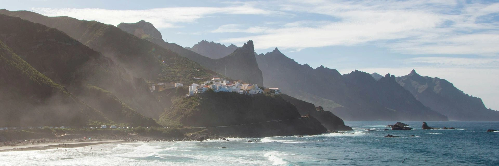

A Community of Saints and Missionaries
Join our CommunityWelcome!
This is a website where we celebrate the members and missionaries of the Spain Las Palmas mission of the Church of Jesus Christ of Latter-Day Saints.